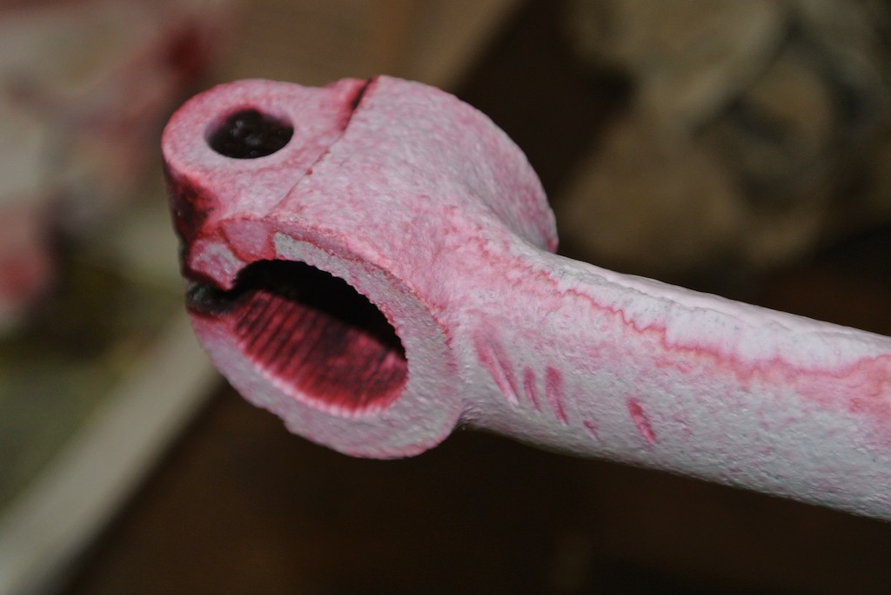
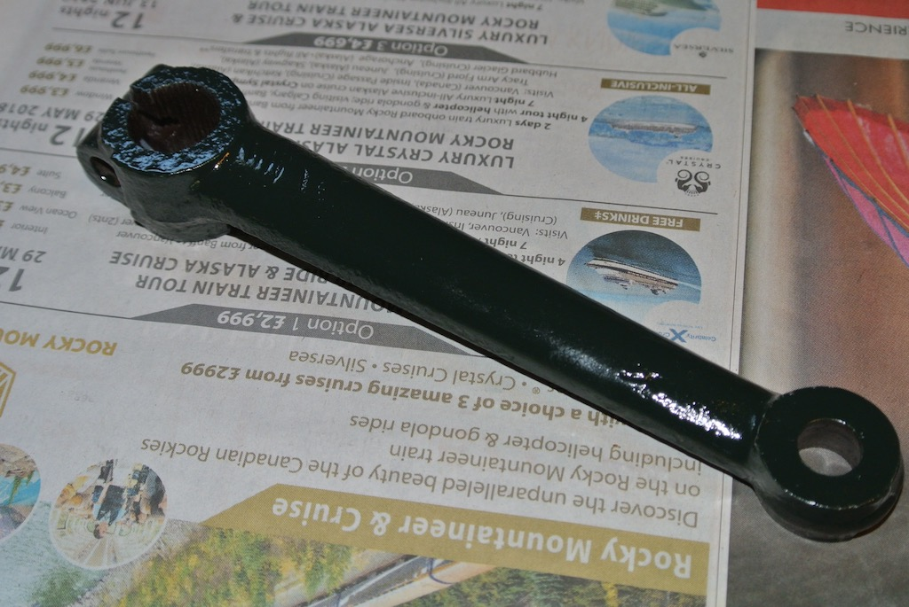

Sherrill and others talk of the propensity of the drop arm to crack where the splined 'ring' that fits around the sector shaft and the main arm meet. While waiting for a new hab and half shaft to arrive, and having the car on axle stands, it seemed a good opportunity to remove the drop arm and do a crack test on it.
So on September 17th, 2017, I separated the drop arm from the drag link using a ball joint separator, putting the castellated nut on so as to hold separator in place. However, this damaged the thread, requiring a little filing and working it back on. Then I removed the bolt holding the drop arm to the sector shaft. The drop arm came off the splines easily.
I noticed that when the the steering was ‘straight ahead’ the sector shaft was quite tight and had no end float. However, when turned, there is end float. However, this sounds consistent with other people's descriptions.
With the drop arm off the car I removed the paint on the whole of the drop arm and used the dye penetrant crack test kit to test the area around the joint to the sector shaft. No cracks found. Using my nail I identified the mark on the drop arm that needs to be aligned with the mark on the sector shaft. I filed the mark to make it more clear and replaced the drop arm without painting it.
While the drop arm was off the car I examined the slot in the top of the drag link end. It seemed to be in good condition, i.e. not worn or distorted. Also, the ball into the drag link rotated easily and smoothly. I therefore concluded that the ball joint does not need any attention and simply pumped a little more grease into it.
A day or two later I removed the drop arm again and gave it two coats of Hammerite before replacing it. This time, I turned the castellated nut upside-down so as not to damage the threads inside the castellations when using the ball joint separator.
© David James 2017 Last updated: 21st October 2017